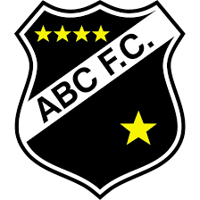
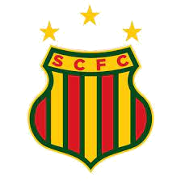
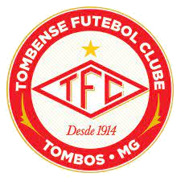

-
ABC
- 1915
ABC clube do povo Campeão das multidões Serás sempre o mais querido Pelos nossos corações Eu me orgulho ser da terra potiguar Quando vou para o gramado Ver o ABC jogar É bola pra aqui É bola pra lá A turma joga com classe E com raça pra ganhar O adversário fica no campo perdido Salve, o mais querido Salve, o mais querido Salve, o mais querido Salve, o mais querido
-
Atlético-Goianiense

- 1937
Meu Atlético, Meu estandarte Modéstia à parte tem a força Quente de um dragão Meu Atlético tem a mania de dar Alegria pro meu coração... Meu rubro negro, eu chego e vejo, Você cumprindo o meu desejo de vencer, vencer, vencer! Dá gosto ver nosso dragão, Rolando a bola pelo chão e Dando um show e mais um gol... Lê Lêlêoo Lê Lêlêoo Atlético!
-
Avaí

- 1923
Na ilha formosa, cheia de graça. O time da raça. É povo é gente, é bola pra frente, É só coração o meu Avaí Avaí meu Avaí. Da ilha és o Leão Avaí meu Avaí. Tu já nasceste campeão Não dá para esquecer o seu belo passado Mas a hora é presente e o time vem quente De encontro marcado com seus dias de glória Pois a ordem é vitória Vencer, vencer.
-
Botafogo-SP
- 1918
Botafogo, Botafogo Orgulho de Ribeirão Sua fibra, sua raça Mantém a nossa tradição A bravura, da sua gente Acende nossos corações Grandioso Botafogo Celeiro de campeões Foi a Vila, Vila Tibério O berço do tricolor Crescendo sempre, se consagrando Na glória da região Sem preconceito, tem branco e preto nela Vermelho representa o sangue do Pantera Nossa bandeira altaneira, varonil Vai tremulando pelo céu do meu Brasil O tricolor de Santa Cruz ninguém engole Porque a galera do Pantera não é mole
-
Ceará

- 1914
Teu passado é todo coberto de glórias Dia a dia tu conquistas mais vitórias Tua bandeira alvinegra desfraldada Teu time em campo tem vitória assegurada. Campeão da popularidade Tua torcida hoje é toda a cidade É um grande povo a te estimular É o Vovô Ceará vai ganhar. És o time das grandes campanhas Sempre aqui ou lá fora tu ganhas Com teus craques em campo a brilhar Ceará tua glória é lutar.
-
Chapecoense
- 1973
Ó glorioso verde que se expande Entre os estados, tu és sempre um esplendor Nas alegrias e nas horas mais difíceis Meu furacão, tu és sempre um vencedor São tantos títulos outrora conquistados Com bravura, muita raça e fervor Leva consigo o coração de uma cidade Meu furacão, tu és sempre um vencedor Sempre honrando nosso escudo com sua raça És alegria nos estádios nunca só Na imensidão e vastidão de nosso estado Chapecoense, tu és sempre Chapecó A força imensa de sua fiel torcida Que nos estádios tudo é lindo e nos fascina A nossa massa, meu verdão mexe contigo Tu és querido em toda Santa Catarina
-
CRB
- 1912
Ao remo pois nosso norte De glórias traçado está Façamos o peito forte Que a pátria forte será Argonautas da esperança Vamos bem longe embalar Nosso sonho de bonança Ao mar! Ao mar! Amemos a natureza O mar verde e o céu de anil Avante! Pela grandeza Do nosso caro Brasil Nos momentos mais extremos A pátria em nós terá fé E o futuro venceremos Alegres, firmes, de pé Em nossas veias ardentes De marujo o sangue corre Mocidade para a frente Que a mocidade não morre.
-
Criciúma

- 1947
Lembrando os heróis do passado Que escreveram seus nomes na história Oh! Tricolor predestinado A um presente e futuro de glórias Salve o Criciúma No esporte Nacional Salve o Criciúma De patrimônio imortal Na hora da decisão Numa só voz grita feliz O meu povão Criciúma, Criciúma Nosso Clube de amor Alma, garra e coração. Vibrando estaremos contigo Desfraldando o teu pavilhão Onde estiver o mais querido Dos campeões - o nosso campeão
-
Grêmio Novorizontino
- 2010
O meu coração entra em campo Com o Mirassol É o verde, amarelo e branco Raça e futebol Leão, o meu campeão rugindo No país do futebol Salve, salve o meu leão querido salve o Mirassol O meu coração entra em campo Com o mirassol É o verde, amarelo e branco Raça e futebol Leão, o meu campeão rugindo No país do futebol Salve, salve o meu leão querido salve o Mirassol e bate forte a emoção eu grito: gol... leão leão eu quero ver você vencer leão, leão, leão O meu coração entra em campo com o Mirassol É o verde, amarelo e branco Raça e futebol
-
Guarani

- 1911
Eu levo sempre comigo, Em todo campo que eu for, A bandeira do verde e branco, Símbolo do torcedor. Brinco de Ouro, a nossa taba, Construído com devoção, Nossa Família Bugrina, Tem raça e tradição. Refrão Avante, avante meu bugre!gremio Com fibra e destemor! A cada nova jornada, Guarani é mais amor. Avante, avante meu bugre! Que nós vibramos por ti! Na vitória ou na derrota, Hoje e sempre, Guarani.
-
Ituano

- 1947
Galo rubro negro altaneiro Forte, valente e audaz És um gigante guerreiro Ituano, você é demais Vencedor, sempre em frente Não há ninguém como tu Joga essa bola na rede Ah, rubro negro de Itu Olê Olá pode o mundo se acabar Olê Olê vamos sempre com você Não há ninguém como tu Ah, rubro negro de Itu Ituano, Ituano, Ituano... Que coisa linda, és o maioral! Dentro de campo, um só pensamento Outra vitória, seu lema é ganhar Sua bandeira balança Distinto e amado brasão A grande massa proclama Ituano, és o grande campeão!
-
Juventude

- 1913
Nossas almas em festa saúdam Esse clube de real tradição Na mais sã alegria se escudam Entoando esta marcha canção Juventude, um passado de glórias Teu nome querido tornou És um clube de muitas vitórias Que a cidade em orgulho deixou
-
Londrina

- 1956
O azul celeste da tua bandeira Simbolizando o céu do paraná O branco, a paz de tua gente ordeira Que em outras terras sei que igual não há. O teu brasão resume a tua história Na altivez da rama do café Tu surgiste oh! grande Londrina do seio de um povo que tem muita fé. Refrão Londrina... Londrina... Londrina... Estás presente em cada coração Caçula-gigante nasceste E hoje és o destemido tubarão. Londrina... Londrina... Londrina... Nossa torcida vibra em cada emoção E o que importa é o ideal de vitória Pois para nós, tu serás sempre campeão. Meu tubarão, time de tantas glórias É uma força do norte ao sul Venceu fronteiras e já fez histórias Tua camisa branca e azul. És o orgulho de uma cidade Que se formou na era do café Tu surgiste oh! Grande londrina do seio de um povo que tem muita fé.
-
Mirassol

- 1925
O meu coração entra em campo Com o Mirassol É o verde, amarelo e branco Raça e futebol Leão, o meu campeão rugindo No país do futebol Salve, salve o meu leão querido salve o Mirassol O meu coração entra em campo Com o mirassol É o verde, amarelo e branco Raça e futebol Leão, o meu campeão rugindo No país do futebol Salve, salve o meu leão querido salve o Mirassol e bate forte a emoção eu grito: gol... leão leão eu quero ver você vencer leão, leão, leão O meu coração entra em campo com o Mirassol É o verde, amarelo e branco Raça e futebol
-
Ponte Preta

- 1900
Estandarte desfraldado Preto e branco é sua cor Ponte Preta vai pro campo prá mostrar o seu valor Ponte Preta Inflamante Ponte Preta Emoção Ponte Preta Gigante Raça de Campeão Seu estádio é o Majestoso Seu nome uma glória Ponte Preta sempre sempre Na derrota ou na vitória És amada Ponte Preta Orgulho de nossa terra Ponte Preta de paz Ponte Preta de guerra
-
Sampaio Corrêa
- 1923
Sampaio Corrêa, do nosso esporte o mais antigo esquadrão; Sua camisa encarnada, verde e amarelo; Veste gigante do esporte em constante duelo. Sampaio Corrêa, time de skol Maior torcida tradição no futebol.
-
Sport
- 1905
Com o Sport eternamente estarei Pois rubro-negras são as cores que abracei E o abraço, de tão forte, Não tem separação Pra mim, o meu Sport é religião A vida a gente vive pra vencer Sport, Sport Uma razão para viver Treze de Maio Mil novecentos e cinco Dia divino em que Guilherme de Aquino Reúne no Recife, ardentes seguidores Fundando esta nação de vencedores Que encanta, enobrece e dá prazer Sport, Sport Uma razão para viver Eterno símbolo de orgulho É o pavilhão De listras pretas e vermelhas, Com o Leão Erguendo, imponente, o imortal escudo Mostrando a gente que o Sport é tudo Que a vida tem de belo a oferecer Sport, Sport Uma razão para viver São gerações e corações Fazendo a história São campeões e emoções Tecendo a glória Do bravo Leão da Ilha, Sport obsessão Que faz bater mais forte o coração Torcida mais fiel não pode haver Sport, Sport Uma razão para viver Sport! Sport! Sport!
-
Tombense
- 1914
O vermelho é garra e coragem O branco muita paz e união Vamos Tombense Vamos jogar para vencer Em toda a partida Jogaremos com você Vamos Tombense Força, raça, amor e fé Estaremos com você Aonde você estiver Somos Tombense não importa o lugar Seja no céu, na terra ou em qualquer lugar Somos Tombense não importa o lugar Seja no céu, na terra ou em qualquer lugar
-
Vila Nova
- 1943
Salve o Vila Nova Sempre Campeão Salve o Vila Nova Orgulho da nossa região O Vila Nova não pode parar O Tigre da vila famosa tem que triunfar Sua torcida é fenomenal Êta esquadrão legal O Vila Nova corteja a vitória Paixão, amor e glória Maior que se viu Vermelho e branco Em nosso peito estampou Time que o povo Com amor construiu E embalado por uma nação Vibrante é o escudo em seu coração E por mais glórias e memórias vai lutar O Vila Nova, sempre e sempre exaltar
-
Vitória

- 1899
Eu sou Leão da Barra Tradição Eu sou vermelho e preto Eu sou paixão Pelos campos do Brasil Nosso grito já se ouviu ÔoÔoooÔ... Eu sou um nome na história Eu sou Vitória com emoção Eu sou um grito de glória Eu sou Vitória de coração Vitória!! Vitória!!